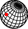

2024/02/14
이파란, 김우림, 임새록, 한송
시끌벅적한 도시 속 조용한 자연의 품에 안겨있는 기분이
들도록 하는 멋진 공원. 특히 자전거(따릉이) 타는 사람이
많아서 활기찬 분위기가 좋다. 나무 그늘 아래 돗자리
깔고 낮잠 한숨 자기 참 좋은 공간이다.
바람을 맞으며 흔들리는 나무를 바라보는 시간이 소중했다.
찾기 힘든, 지친 정신을 맑아지게 해 주는 곳. 오래 기억에 남지 않을까. 잊기
전 계속해서 올 것. 햇살과 공기를 느낄 것.
입구 우측 안쪽으로 들어가면 작은 계단이 하나 있는데, 그 아래 조그마한 물놀이장이
있다. 내려가 앉아 있다보면 주변의 푸릇한 풍경이 눈에 들어오고 잦게 일렁이는 움직임을
보기가 즐겁다. 자전거를 타야지만 만끽할 수 있는 자유로움이 그 어느 곳보다 아름다운 곳.
뚝섬에서 보는 풍경이 정말 멋있고, 특히 해질녘의 한강은 그 무엇보다 로맨틱하다. 야외에서
바베큐를 즐길 수 있기 때문에 친구들과 함께 좋은 추억을 만들고 싶다면 손에 꼽을 수 있는 곳.
도시 속에 이런 공간이 숨어 있다는 것이 서울이 가진 매력이 아닐까 생각한다.
한강공원은 늘 다양한 사람들로 붐비지만 뚝섬에 있는 공원들은 특히 다채로운 면들을 찾기에
적합하다고 여겨진다. 사람이 많아서 활기가 넘친다고 느껴지는
한편, 제각기 다른 목적을 가지고 모인 사람들이 움직이는
다양하고 재미난 모습들을 보다보면 시간 가는 줄 모르겠다.
하나 더 꼽자면, 일몰이 아름다워 참으로 멋져 보이는
곳이며, 조만간 출사를 위해 다시 이곳에
방문하게 되지 않을까 싶다.

037.52930173983801
127.06927750540686
따릉이
물놀이장
붐비지만
일몰